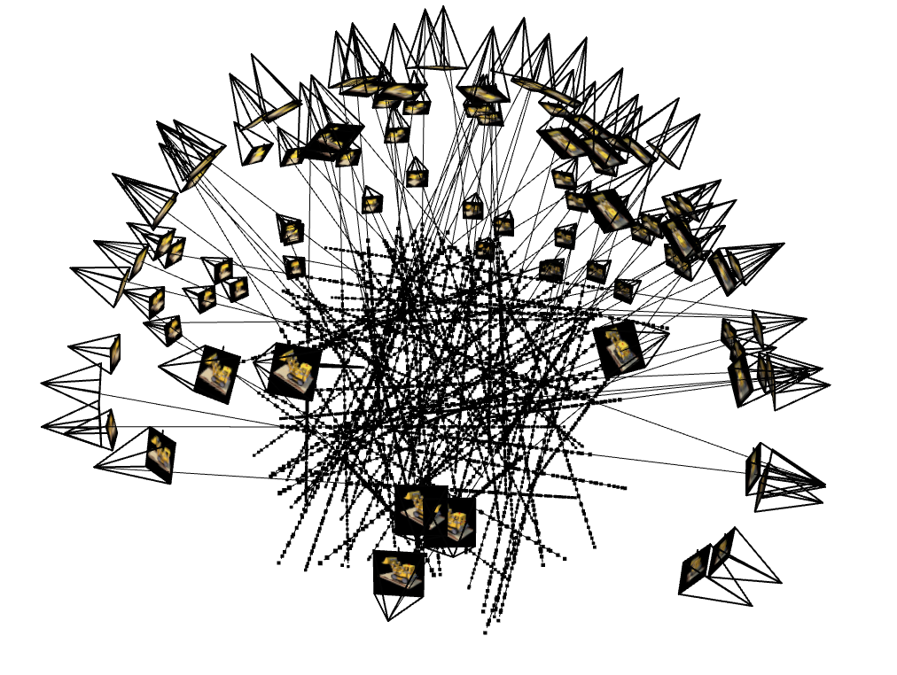
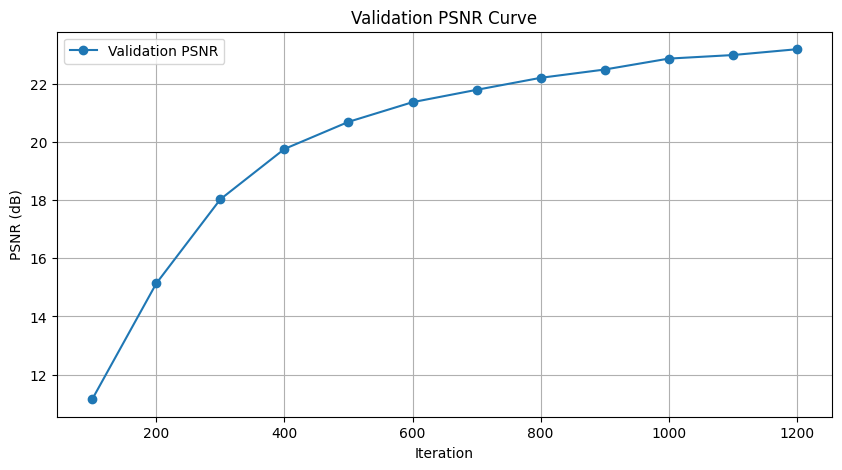

Project 6: Neural Radiance Field
Part 1: Fit a Neural Field to a 2D Image
This project involves implementing a Neural Radiance Field (NeRF), characterized as \( F: \{x, y, z, \theta, \phi\} \rightarrow \{r, g, b, \sigma\} \). As a start off, the objective is to implement a 2D version \( F: \{x, y\} \rightarrow \{r, g, b\} \).
[Impl: 2D Network]
The architecture involves two main components: Multilayer Perceptron (MLP) network and Sinusoidal Positional Encoding (PE).
-
Multilayer Perceptron: A stack of non linear activations and fully connected layers. The structure is composed of (1) input layer (in this case positional encoded 42D vector), (2) hidden layers (in this case three layers with 256 neurons each, using ReLU activation), and (3) output layer (that maps to 3D rgb color values, using Sigmoid activation to constrain values to [0,1] as per the requirement). The implementation follows the reference below:

-
Positional Encoding: A series of sinusoidal functions to the input coordinates to expand its dimensionality, enhancing the network's ability to approximate high-frequency functions by embedding 2D coordinates into a high-dimensional space. The input is a 2D pixel coordinates \((u,v)\) normalized to \([0,1]\), and the output is the encoded coordinates of shape \((...,D \cdot (2L+1))\), where \(L\) is the max frequency level. The complete formulation is:
\( \text{PE}(x) = \{x, \sin(2^0\pi x), \cos(2^0\pi x), \sin(2^1\pi x), \cos(2^1\pi x), ..., \sin(2^{L-1}\pi x), \cos(2^{L-1}\pi x)\} \)
[Impl: Dataloader]
To avoid running out of GPU memory limit, we need to implement a dataloader that randomly sample \(N\) pixels at every iteration for training. The dataloader is expected to return both the \(N \times 2\) 2D coordinates and \(N \times 3\) colors of the pixels, which will serve as the input for our network.
[Impl: Loss Function, Optimizer, and Metric]
Here, we use Peak signal-to-noise ratio (PSNR) (defined as \(PSNR=10 \cdot \log_{10}(1/MSE)\)) to calculate our loss, Adam with \(lr=1e-2\) as our optimizer. For this part, we use a \(batch\_size=10000\) and \(num\_iterations=1000\).
[Impl: Hyperparameter Tuning]
With everything implemented, we can test out our result as follow. Additionally, we tried vary the hyperparameters \(num\_layers\), \(hidden\_dim\), \(L\), or \(learning\_rate\) to show how it affects their respective performance.
-
Hyperparameters: \(num\_layers=5\), \(hidden\_dim=256\), \(L=10\), \(learning\_rate=1e-2\)
-
Final PSNR: \(25.57 dB\)
-
Hyperparameters: \(num\_layers=3\), \(hidden\_dim=256\), \(L=20\), \(learning\_rate=1e-2\)
Final PSNR: \(24.47 dB\)
-
Hyperparameters: \(num\_layers=5\), \(hidden\_dim=512\), \(L=10\), \(learning\_rate=1e-3\)
-
Final PSNR: \(27.04 dB\)
-
Hyperparameters: \(num\_layers=5\), \(hidden\_dim=512\), \(L=10\), \(learning\_rate=1e-3\)
-
Final PSNR: \(31.36 dB\)
Here, we see that the third set of hyperparameter produce the best result. This was validated with a different input image. This is likely due to (1) having larger hidden dimension allowed the network to capture finer variations in data and (2) having just-small-enough learning rate strikes a good balance between convergence speed and stability. From the second set of parameters, we see that having a shallow network (number of layers being 3) reduces the model's capacity to represent complex, high-frequency functions. This limitation got amplified when dealing with large \(L\), thus resulting in an undesirable result.
Part 2: Fit a Neural Radiance Field from Multi-view Images
To extend our insights from previous part, we can proceed to a more interesting task that uses a neural radiance field to reepresent a 3D space, through inverse rendering from multi-view calibrated images.
Part 2.1: Create Rays from Cameras
[Impl: Camera to World Coordinate Conversion]
The transformation between the world space \(X_w=(x_w,y_w,z_w)\) and the camera space \(X_c=(x_c,y_c,z_c)\) can be defined as a rotation matrix \(R_{3 \times 3}\) and a translation vector \(\vec{t}\). Here, we define
\(\begin{bmatrix}
R_{3 \times 3} & \vec{t}\\
0_{3 \times 3} & 1
\end{bmatrix}\)
as the world-to-camera (w2c) transformation matrix, or extrinsic matrix. The inverse of it is called camera-to-world (c2w) transformation matrix. Here we define a function \(transform\) that apply the inverse of the extrinsic matrix, which consists of the rotation matrix and translation vector. To support batched processing, we apply matrix multiplications across all points in the given batch. More distinctively:
-
Single Transformation: Multiply \(c2w\) with \(x\) using standard matrix multiplication.
-
Batched Transformation: Perform batched matrix multiplication, ensuring each transformation matrix applies to its coresponding batch of points.
[Impl: Pixel to Camera Coordinate Conversion]
Consider a pinhole camera with focal length \((f_x,f_y)\) and principal point (\(o_x=image\_width/2,\), \(o_y=image\_height/2\)), it's intrinsic matrix \(\boldsymbol{K}\) is defined as:
\(K = \begin{bmatrix}
f_x & 0 & o_x\\
0 & f_y & o_y\\
0 & 0 & 1
\end{bmatrix}\)
which can be used to project a 3D point (\(x_c,y_c,z_c\)) in the camera coordinate system to a 2D location (\(u,v\)) in pixel coordinate system:
\(s \begin{bmatrix}
u\\
v\\
1
\end{bmatrix} = K \begin{bmatrix}
x_c\\
y_c\\
z_c
\end{bmatrix}\)
in which \(s=z_c\) is the depth of this point along the optical axis. Here, the objective is to implement a function that inver the aforementioned process, which transform a point from the pixel coordinate system back to the camera coordinate system:
-
Input: The function takes in an intrinsic matrix \(K\) of shape (\(3,3\)) or (\(B,3,3\)), pixel coordinates \(uv\) of shape (\(N,2\)) or (\(B,N,2\)), and depth value \(s\) of shape \(N\) or (\(B,N\)).
-
Homogeneous Conversion: Append 1 to each pixel coordinate to create homogeneous coordinates.
-
Invert Intrinsic Matrix: Compute \(K^{-1}\) then multiply it with the homogeneous pixel coordinates to obtain normalized 3D camera coordinates (\(x_c,y_c,1\)).
-
Scale by Depth: Multiply the normalized coordinates by \(s\).
[Impl: Pixel to Ray]
A ray can be defined by an origin vector \(r_o \in R^3\) and a direction vector \(r_d \in R^3\). In the case of pinhole camera, we want to compute \(\{r_o,r_d\}\) for every pixel (\(u,v\)). The origin vector is simply the location of the cameras, defined as:
\(r_o = -R_{3 \times 3}^{-1}t\)
To calculate the ray direction, we choose a point along this ray with \(s=1\) and find its coordinate in the world space \(X_w=(x_w,y_w,z_w)\). The normalized ray direction can thus be computed by:
\(r_d = \frac{X_w-r_o}{||X_w-r_o||_2}\)
Here, the objective is to implement a function that convert a pixel coordinate to a ray defined by some origin vector and direction vector. The detailed architecture is as follows:
-
Input: The function takes in an intrinsic matrix \(K\), camera-to-world matrix \(c2w\), and pixel coordinates \(uv\).
-
Pixel to Camera Conversion: Use previously defined function to acquire the camera coordinates \(x_c,y_c,z_c\) assuming \(s=1\).
-
Camera to World Transformation: Tranform camera coordinates to world using the matrix \(c2w\).
-
Compute Ray Directions: Calculate \(r_d\) as according to the aforementioned equation.
Part 2.2: Sampling
[Impl: Sampling Rays from Images]
To train a NeRF model, we need to generate rays from multiple input images. In Part 1, we have done random sampling on a single image to get the pixel color and pixel coordinates. Here, we can build on top of that using the camera intrinsics and extrinsics and be able to convert the pixel coordinates into ray origins and directions. To implement, we create a global pool of pixel coordinates and corresponding colors (with an offset of \(0.5\) to account for pixel center alignnment). We then randomly sample \(N\) pixels from the pool and use the previously defined \(pixel\_to\_ray\) function for each sampled pixel to compute their respective origin and direction vectors.
[Impl: Sampling Points along Rays]
Since rays must be discretized into 3D points to represent samples in space. This is achieved by dividing the ray into a fixed number of intervals between near and far bounds using uniform sampling. To improve robustness and avoid overfitting, we add a small perturbation to the sample intervals during training, then expand \(t\_vals\) across all ray sot shape \(N,n\_samples,1\). Finally, using the provided ray equation
\(points = r_o + r_d \cdot t\)
we can compute the 3D points at each sampled \(t\) value.
Part 2.3: Putting the Dataloading All Together
Similar to Part 1, we need to write a dataloader that randomly sample pixels from multiview images. What is different, however, is that now we need to convert the pixel coordinates into rays in our dataloader, and return ray origin, ray direction, and pixel colors. Here, we defined the \(RaysData\) class that integrates all components to sample rays and pixels from multiview images. Using the provided unit tests, we can obtain the following ray visualizations:

Part 2.4: Neural Radiance Field
We can now implement the neural network \(NeRFMLP\) to predict density and RGB color values for sampled 3D points. It consists of two main components: one for position encoding and density prediction, another for view-dependent color prediction.
 Key Features:
Key Features:
-
Positional Encoding: Same as part 1; converts 3D input world coordinates and ray directions into higher dimensional spaces.
-
MLP for Position: A stack of fully connected layers (similar but deeper than that from Part 1).
-
View-Dependent Color Prediction: Combines the position encoding with ray direction encoding for color prediction.
Part 2.5: Volume Rendering
We are given the following equations:
\(C(r) = \int_{t_n}^{t_f}T(t)\sigma(r(t))c(r(t),d)dt\), where \(T(t)=\exp(-\int_{t_n}^{t}\sigma(r(s))ds)\)
This suggests that at every small step \(dt\) along the ray, we add the contribution of that small interval \([t,t+dt]\) to that final color. Here, we implement the discrete approximation of the rendering equation for a batch of rays.
[Impl: Training Loop]
Putting everyuthing together, we can produce the following result. Here we used parameters recommended and obtained based on our experience from Part 1: \(num\_samples=64\), \(hidden\_dim=256\), \(num\_layers=10\), \(pe\_freq\_pos=10\), \(pe\_freq\_dir=4\), and \(learning\_rate=5e-4\), resulting in a final PSNR of \(23.69 dB\).

Note: For the sake of producing 23+dB on the validation set, I ran 3000 iterations instead of 1000, and the training took around 3hours. However, the predicted images and rendered video were made with the 1000 iterations model.
Bells & Whistles
This is a variation of Part 2.5. To change the background color, we first compute the accumulated alpha by summing the weights across all samples to determine the total contribution of the sampled points along the ray. The remaining contribution (\(1-accumulated\_alpha\)) (scaled by background color) is then used to calculate the background contribution. Using this, we can render the background color as desired: